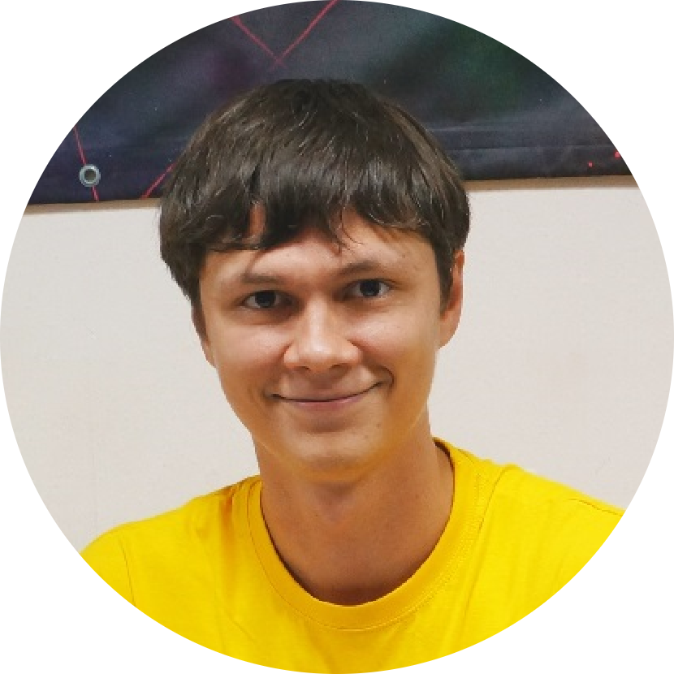

|  |
|
| 2006 - 2010 | Bachelor of Science: Novosibirsk State University(NSU) - Physics. |
| 2010 - 2012 | Master of Science: NSU - Physics. |
| 01/2009 - 06/2012 | C++ developer at Institute of Automation and Electrometry of the Siberian Branch of the Russian Academy of Sciences |
| 11/2013 - 06/2018 | C++ developer at: SoftLab-NSK, Movavi, 2Gis, Luxoft(Deutsche bank) |
| 06/2018 - present | C++/Android/Kotlin development and publication of my own mobile applications |
| Key skills | С++, STL, Qt, QML, Kotlin |
| Platforms | Windows, Linux, Android |
| Version Control Systems | Git (bitbucket, github), Svn |
| Build systems | QMake, CMake, MSBuild, Gradle |
| Testing | Google test, Catch, QTest, Boost test, TDD, BDD |
| Other | Vim, Java, Firebase, Python, UML, Lua, Bash, NuGet, DirectX |
Foody - a cookbook application combined with a shopping list. Main goal is to calculate ingredients amount for user's selected dishes and to provide a convinient shopping list. Developed in C++ using Qt, QML, QtFirebase, QtAndroidExtensions. Tests framework is Catch.
Sharp - a pistol simulator application. Detects phone orientation in surrounding area using built-in sensors. User can choose a target and shoot in the target's direction. The application shows the image of target with bullet holes and calculates scores. Developed in Kotlin using Dagger2, Firebase Analytics, Admob.
SoftLab Biathlon Coach - safe biathlon shooting trainer without bullets. The system consists of a special gun with a built-in camera, an electromechanical target and an application that calculates bullet trajectory. The system design, the network protocol for target control and the user interface were developed by me. The application was developed in C++ with MFC and DirectShow.
Movavi Video Editor - a Win/Mac application with a huge codebase that has been developed for more than ten years by several different teams. My tasks were usually connected with business logic, system design, feature development, autotest adding and bugfixing. C++, Qt, Catch, CMake were mostly used.
2GIS - an Android application for a local search on a digital city map. I worked in the core development team that evolves the core inner library with interfaces and implementations for Android and iOS teams. I used C++ with Qt, QML, Boost. OS - Linux, IDE - QtCreator.
I'm always looking for ways to improve my skills and learn IT related stuff. I think expensive and good quality solutions are better than cheap and temporary ones. I prefer to have a spacious mind and ability to look fast into a problem than deep knowledge in a narrow field. When I solve a problem I always try to find the best fit solution, sometimes it isn't the first one which works.
I'd used C++ for a long time until once I came up with an idea to develop my own mobile application. During development I found out necessity to use platform dependent code. After that I got interested in Android OS and I read a good book "Android Programming: The Big Nerd Ranch Guide". With C++ background I was able to read java code but I had problems with some code examples written in Kotlin. Later I got interested in Kotlin and I like that language pretty much now. Today I'm an experienced C++ developer and also I'm familiar with Android and Kotlin. I'm motivated to continue improving my skills.